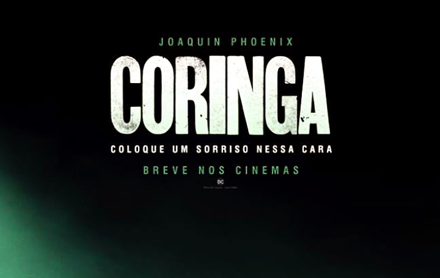
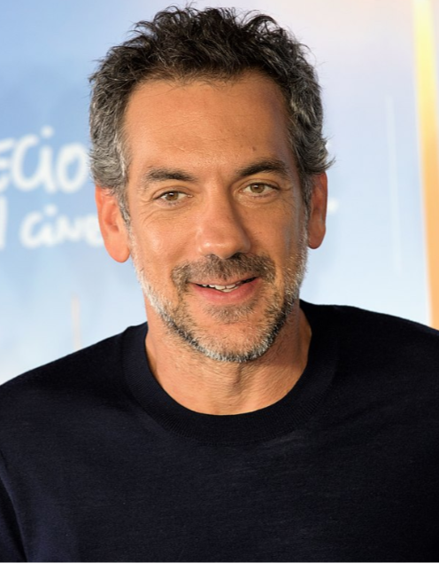
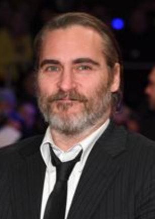
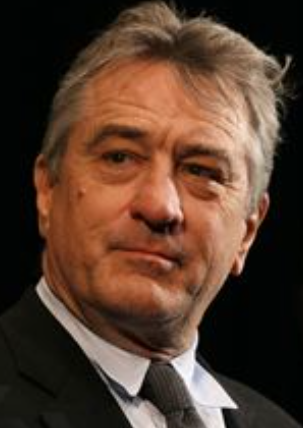

O coringa é um filme originalmente lançado em 2019 e é inteiramente ao personagem icônico da DC o coringa onde mostra uma versão do personagem como homem que tem problemas mentais chamado de Arthur Fleck, um comediante isopado, fracassado, intimidado e tratado como um nada pela sociedade. O filme tem classificação de +16 e o tempo de 2h:2min proximadamente e conta com a direção de Todd Phillips e conta com o ator Joaquin Phoenix como personagem principalmente da história.
Tópicos muito interessantes que são abordados e muito bem no filme inteiro
A história aconpanha a vida de Arthur Fleck que era um homem com problemas mentais e tratado como um nada para sociedade, ele trabalhava como comediante mais era um fracassado como tal, foi ai que ele cansado de ser esnobado, ser tratado como um bicho e diferente dos demais desenvolveu uma sociopatia e conforme o tempo a loucura o dominou, afinal “ a loucura e que nem a gravidade só basta um empurrãozinho” ou “ basta um dia ruim para um homem sã ficar louco” ele teve até um relacionamento em meio a tudo isso, parecia até salvação mais a ilusão do namoro dele, além da sua mãe ser internada, isso tudo virou a destruição dele e lentamente virou o coringa que conhecemos hoje em dia, mais em um dia ele perdido na loucura del já, matou dois homens inocentes e com isso veio finalmente a transformação dele depois ele matou a mãe e depois os meninos do trem, ele até foi chamado para uma entrevista em um promagra com o Murray, por causa que ele tava até fazendo um sucesso como um comediante, nesse programa ele assumiu o nome coringa, e nisso vem a frase icônica dele “você poderia me apresentar como coringa” detalhe eles ainda não sabiam que ele tinha matado as pessoas, mais deixando isso de lado ele apareceu no programa e foi entrevistado e tal, depois ele contando piadas e tal, e ria mais ninguém entendia ou achava graça das piadas dele, e foi ai que surgiu outra frase icônica dele “ qual e a graça? imaginei que você perguntaria, e que eu pensei em uma piada, só que você não entenderia" depois disso ele confessa, que ele matou aquelas pessoas e matou o apresentador Murray, depois disso começou a onda de crimes do coringa



Conheça mais sobre os atores do filme ATORES
É um filme muito bom mesmo de verdade e um filme que eu recomendo muito para quem não assistiu ainda, e um filme cheio de ação que trás muita emoção e animação para o filme, mais muito necessário também porque ele mostra muito também sobre nosso mundo sobre a desigualdade e como pisamos nas pessoas mais fracas no caminho e através dessa visão e muitos cê veem no coringa sendo pisados e pisados e isso afetou muito no psicológico do coringa que ja tinah uma doença mental o transformando em um vilão sanguinário e cruel como é hoje em dia ou seja nois criamos os vilões na maioria das vezes até na vida real adinal "basta um dia ruim para um homem sã ficar louco" "como a gravidade também só basta um empurranzinho" essa e a minha visão desse filme ótimo que todos vão adorar na minha opinião principalmente quem curte o coringa.